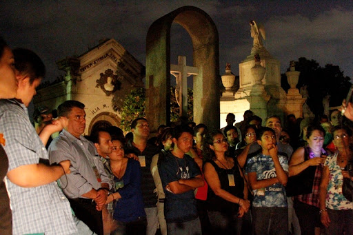

En el salvador donde el cementerio de “los ilustres” es uno de los más grandes del país en donde se encuentran y yacen los restos de miembros de acaudaladas familias, políticos, escritores, altos cargos del ejército, ex presidentes e incluso gente común, cada vez que se hace un viaje a este cementerio es visitado por 350 personas cada noche.
Muchos de los visitantes van con la idea de conocer un lugar de muerte y paz en plena seguridad, posiblemente con las ansias de ver un fantasma también van con la intención de conocer un poco más acerca de las personas que han hecho por su país y la historia de ellos para conocer un poco más de su cultura
|  |
Si quieres informacion acerca del lugar y registrarte a una de nuestros recorridos, usa el enlace de abajo para registrate.
Nosotros nos pondremos en contacto contigo!
-------->Reserva tu cupo <--------